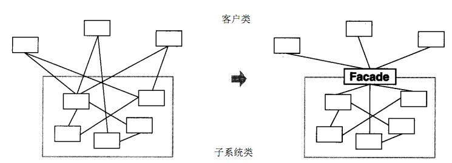

结构型模式 Ⅰ
结构型模式描述如何将类或对象按某种布局组成更大的结构。它分为类结构型模式和对象结构型模式，前者采用继承机制来组织接口和类，后者釆用组合或聚合来组合对象。
由于组合关系或聚合关系比继承关系耦合度低，满足“合成复用原则”，所以对象结构型模式比类结构型模式具有更大的灵活性。
结构型模式分为以下 7 种：
- 代理模式
- 适配器模式
- 装饰者模式
- 桥接模式
- 外观模式
- 组合模式
- 享元模式
1-代理模式
概述
由于某些原因需要给某对象提供一个代理以控制对该对象的访问。这时，访问对象不适合或者不能直接引用目标对象，代理对象作为访问对象和目标对象之间的中介。
Java 中的代理按照代理类生成时机不同又分为静态代理和动态代理。
-
静态代理代理类在编译期就生成
-
动态代理代理类则是在 Java 运行时动态生成
动态代理又有
- JDK 代理
- CGLib 代理两种
结构
代理（Proxy）模式分为三种角色：
- 抽象主题（Subject）类： 通过接口或抽象类声明真实主题和代理对象实现的业务方法。
- 真实主题（Real Subject）类： 实现了抽象主题中的具体业务，是代理对象所代表的真实对象，是最终要引用的对象。
- 代理（Proxy）类 ： 提供了与真实主题相同的接口，其内部含有对真实主题的引用，它可以访问、控制或扩展真实主题的功能。
静态代理
我们通过案例来感受一下静态代理。
【例】火车站卖票
如果要买火车票的话，需要去火车站买票，坐车到火车站，排队等一系列的操作，显然比较麻烦。而火车站在多个地方都有代售点，我们去代售点买票就方便很多了。这个例子其实就是典型的代理模式，火车站是目标对象，代售点是代理对象。类图如下：
classDiagram
class SellTickets {
<< interface >>
+ sell() void
}
class Client {
+ main() void
}
class TrainStation {
+ sell() void
}
class ProxyPoint {
+ sell() void
}
SellTickets <|.. TrainStation
SellTickets <|.. ProxyPoint
Client ..> ProxyPoint
ProxyPoint o-- TrainStation : 聚合
note for SellTickets "抽象主题类"
Code:
//卖票接口
public interface SellTickets {
void sell();
}
//火车站 火车站具有卖票功能，所以需要实现SellTickets接口
public class TrainStation implements SellTickets {
public void sell() {
System.out.println("火车站卖票");
}
}
//代售点
public class ProxyPoint implements SellTickets {
private TrainStation station = new TrainStation();
public void sell() {
System.out.println("代理点收取一些服务费用");
station.sell();
}
}
//测试类
public class Client {
public static void main(String[] args) {
ProxyPoint pp = new ProxyPoint();
pp.sell();
}
}从上面代码中可以看出测试类直接访问的是 ProxyPoint 类对象，也就是说 ProxyPoint 作为访问对象和目标对象的中介。同时也对 sell() 方法进行了增强（代理点收取一些服务费用）。
JDK动态代理
接下来我们使用动态代理实现上面案例，先说说 JDK 提供的动态代理。Java 中提供了一个动态代理类 Proxy，Proxy 并不是我们上述所说的代理对象的类，而是提供了一个创建代理对象的静态方法（newProxyInstance方法）来获取代理对象。
Code:
//卖火车票接口
public interface SellTickets {
void sell();
}//火车站实现卖票接口
public class TrainStation implements SellTickets {
@Override
public void sell() {
System.out.println("火车站卖票");
}
}/**
* 获取代理对象的工厂类
* 代理类也实现了对应的接口
*/
public class ProxyFactory {
//声明目标对象
private TrainStation station = new TrainStation();
public SellTickets getProxyObject() {
/*
获取代理对象
ClassLoader loader : 类加载器, 用于加载代理类. 可以通过目标对象获取类加载器
Class<?>[] interfaces : 代理类实现的接口的字节码对象
InvocationHandler h : 代理对象的调用处理程序
*/
SellTickets proxyObject = (SellTickets) Proxy.newProxyInstance(
station.getClass().getClassLoader(),
station.getClass().getInterfaces(),
new InvocationHandler() {
/*
Object proxy : 代理对象, 和proxyObject对象是同一个对象, 在invoke方法基本不用
Method method : 对接口中的方法进行封装的method对象
Object[] args : 调用方法的实际参数
返回值: 方法的返回值
*/
@Override
public Object invoke(Object proxy, Method method, Object[] args) throws Throwable {
System.out.println("代售点收取一定费用");
Object obj = method.invoke(station, args);
return obj;
}
}
);
return proxyObject;
}
}//测试类
public class Test {
public static void main(String[] args) {
ProxyFactory proxyFactory = new ProxyFactory();
SellTickets sellTickets = proxyFactory.getProxyObject();
sellTickets.sell();
/** ====输出====
* 代售点收取一定费用(jdk动态代理)
* 火车站卖票
*/
}
}使用了动态代理，思考下面问题：
ProxyFactory 是代理类吗？
ProxyFactory 不是代理模式中所说的代理类，而代理类是程序在运行过程中动态的在内存中生成的类。通过阿里巴巴开源的 Java 诊断工具（Arthas）查看代理类的结构：
-
更改测试类, 让程序一直执行
//获取对象全类名 System.out.println(sellTickets.getClass()); //让程序一直进行 while (true){} -
使用 jad 命令
jad com.sun.proxy.$Proxy0
精简后代码如下:
public final class $Proxy0 extends Proxy implements SellTickets {
private static Method m3;
public $Proxy0(InvocationHandler invocationHandler) {
super(invocationHandler);
}
public final void sell() {
this.h.invoke(this, m3, null);
}
static {
m3 = Class.forName("cn.saddyfire.pattern.proxy.jdk_proxy.SellTickets").getMethod("sell", new Class[0]);
}
}同时代理类的有参构造 $Proxy0(InvocationHandler invocationHandler) 的参数直接赋值给了 super() 父类. 继续进入 Proxy 类
//Proxy类片段
public class Proxy implements java.io.Serializable {
protected InvocationHandler h;
}
//Invoke方法
new InvocationHandler() {
/*
Object proxy : 代理对象, 和proxyObject对象是同一个对象, 在invoke方法基本不用
Method method : 对接口中的方法进行封装的method对象
Object[] args : 调用方法的实际参数
返回值: 方法的返回值
*/
@Override
public Object invoke(Object proxy, Method method, Object[] args) throws Throwable {
System.out.println("代售点收取一定费用(jdk动态代理)");
Object obj = method.invoke(station, args);
return obj;
}
}因此: 代理类中的 this.h.invoke(this, m3, null); 实际就是我们传入的 invoke() 方法
- 代理类（$Proxy0）实现了 SellTickets。这也就印证了我们之前说的真实类和代理类实现同样的接口。
- 代理类（$Proxy0）将我们提供了的匿名内部类对象传递给了父类。
执行流程如下：
1. 在测试类中通过代理对象调用sell()方法
2. 根据多态的特性，执行的是代理类（$Proxy0）中的 sell() 方法
3. 代理类（$Proxy0）中的 sell() 方法中又调用了 InvocationHandler 接口的子实现类对象的invoke方法
4. invoke 方法通过反射执行了真实对象所属类(TrainStation)中的 sell() 方法
CGLIB动态代理
同样是上面的案例，我们再次使用 CGLIB 代理实现。
如果没有定义 SellTickets 接口，只定义了 TrainStation(火车站类)。很显然 JDK 代理是无法使用了，因为 JDK 动态代理要求必须定义接口，对接口进行代理。
CGLIB 是一个功能强大，高性能的代码生成包。它为没有实现接口的类提供代理，为 JDK 的动态代理提供了很好的补充。
CGLIB 是第三方提供的包，所以需要引入 jar 包的坐标：
<dependency>
<groupId>cglib</groupId>
<artifactId>cglib</artifactId>
<version>2.2.2</version>
</dependency>//CGLib代理无需接口
public class TrainStation{
public void sell() {
System.out.println("火车站卖票");
}
}//代理工厂
public class ProxyFactory implements MethodInterceptor {
private TrainStation station = new TrainStation();
public TrainStation getProxyObject() {
//创建Enhancer对象, 类似于JDK代理中的Proxy类
Enhancer enhancer = new Enhancer();
//设置父类的字节码对象
enhancer.setSuperclass(TrainStation.class);
//设置回调函数
enhancer.setCallback(this);
//创建代理对象
TrainStation proxyObject = (TrainStation) enhancer.create();
return proxyObject;
}
@Override
public Object intercept(Object o, Method method, Object[] objects, MethodProxy methodProxy) throws Throwable {
System.out.println("代售点收取一定服务费(CGLib代理)");
//调用目标方法
method.invoke(station, objects);
return null;
}
}//测试类
public class Test {
public static void main(String[] args) {
//创建代理工厂对象
ProxyFactory proxyFactory = new ProxyFactory();
//获取代理对象
TrainStation proxyObject = proxyFactory.getProxyObject();
proxyObject.sell();
}
}三种代理的对比
-
JDK 代理和 CGLIB 代理
使用 CGLib 实现动态代理，CGLib 底层采用 ASM 字节码生成框架，使用字节码技术生成代理类，在 JDK1.6 之前比使用 Java 反射效率要高。唯一需要注意的是，CGLib 不能对声明为 final 的类或者方法进行代理，因为 CGLib 原理是动态生成被代理类的子类。
在 JDK1.6、JDK1.7、JDK1.8 逐步对 JDK 动态代理优化之后，在调用次数较少的情况下，JDK 代理效率高于 CGLib 代理效率，只有当进行大量调用的时候，JDK1.6 和 JDK1.7 比 CGLib 代理效率低一点，但是到 JDK1.8 的时候，JDK 代理效率高于 CGLib 代理。所以如果有接口使用 JDK 动态代理，如果没有接口使用 CGLIB 代理。
-
动态代理和静态代理
动态代理与静态代理相比较，最大的好处是接口中声明的所有方法都被转移到调用处理器一个集中的方法中处理（InvocationHandler.invoke）。这样，在接口方法数量比较多的时候，我们可以进行灵活处理，而不需要像静态代理那样每一个方法进行中转。
如果接口增加一个方法，静态代理模式除了所有实现类需要实现这个方法外，所有代理类也需要实现此方法。增加了代码维护的复杂度。而动态代理不会出现该问题
优缺点
优点：
- 代理模式在客户端与目标对象之间起到一个中介作用和保护目标对象的作用；
- 代理对象可以扩展目标对象的功能；
- 代理模式能将客户端与目标对象分离，在一定程度上降低了系统的耦合度；
缺点：
- 增加了系统的复杂度；
使用场景
-
远程（Remote）代理
本地服务通过网络请求远程服务。为了实现本地到远程的通信，我们需要实现网络通信，处理其中可能的异常。为良好的代码设计和可维护性，我们将网络通信部分隐藏起来，只暴露给本地服务一个接口，通过该接口即可访问远程服务提供的功能，而不必过多关心通信部分的细节。
-
防火墙（Firewall）代理
当你将浏览器配置成使用代理功能时，防火墙就将你的浏览器的请求转给互联网；当互联网返回响应时，代理服务器再把它转给你的浏览器。
-
保护（Protect or Access）代理
控制对一个对象的访问，如果需要，可以给不同的用户提供不同级别的使用权限。
2-适配器模式
如果去欧洲国家去旅游的话，他们的插座如下图最左边，是欧洲标准。而我们使用的插头如下图最右边的。因此我们的笔记本电脑，手机在当地不能直接充电。所以就需要一个插座转换器，转换器第 1 面插入当地的插座，第 2 面供我们充电，这样使得我们的插头在当地能使用。生活中这样的例子很多，手机充电器（将 220v 转换为 5v 的电压），读卡器等，其实就是使用到了适配器模式。
定义：
将一个类的接口转换成客户希望的另外一个接口，使得原本由于接口不兼容而不能一起工作的那些类能一起工作。
适配器模式分为类适配器模式和对象适配器模式，前者类之间的耦合度比后者高，且要求程序员了解现有组件库中的相关组件的内部结构，所以应用相对较少些。
结构
适配器模式（Adapter）包含以下主要角色：
- 目标（Target）接口(插座)：当前系统业务所期待的接口，它可以是抽象类或接口。
- 适配者（Adaptee）类(插头)：它是被访问和适配的现存组件库中的组件接口。
- 适配器（Adapter）类(转换器)：它是一个转换器，通过继承或引用适配者的对象，把适配者接口转换成目标接口，让客户按目标接口的格式访问适配者。
类适配器模式
实现方式：定义一个适配器类来实现当前系统的业务接口，同时又继承现有组件库中已经存在的组件。
【例】读卡器
现有一台电脑只能读取 SD 卡，而要读取 TF 卡中的内容的话就需要使用到适配器模式。创建一个读卡器，将 TF 卡中的内容读取出来。
类图如下：
classDiagram
class Client {
+ main() void
}
class Computer {
+ read(SDCard sdCard) String
}
class SDCard {
<< interface >>
+ readSD() String
+ writeSD() void
}
class SDcardImpl {
+ readSD() String
+ writeSD() void
}
class SDAdapterTF {
+ readSD() String
+ writeSD() void
}
class TFCard {
<< interface >>
+ readTF() String
+ writeTF() void
}
class TFCardImpl {
+ readTF() String
+ writeTF() void
}
TFCard <|.. TFCardImpl : 实现
TFCardImpl <|-- SDAdapterTF : 继承
SDCard <|.. SDcardImpl : 实现
SDCard <|.. SDAdapterTF : 实现
Computer ..> SDCard : 依赖
Client ..> Computer
Client ..> SDcardImpl
Client ..> SDAdapterTF
Code:
//适配者类
public interface TFCard {
//从 TF 卡中读取数据
String readTF();
//往 TF 卡中写数据
void writeTF(String msg);
}//适配者类实现类
public class TFCardImpl implements TFCard {
@Override
public String readTF() {
String msg = "TFCard read msg: hellp word TFcard";
return msg;
}
@Override
public void writeTF(String msg) {
System.out.println("TFCard write msg : " + msg);
}
}//目标接口
public interface SDCard {
//从SD卡中读取数据
String readSD();
//往SD卡中写数据
void writeSD(String msg);
}//SD卡实现类
public class SDCardImpl implements SDCard {
@Override
public String readSD() {
String msg = "SDCard read msg: hello word SD";
return msg;
}
@Override
public void writeSD(String msg) {
System.out.println("SDCard write msg: " + msg);
}
}//电脑类
public class Computer {
public String readSD(SDCard sdCard) {
if (sdCard == null) {
throw new NullPointerException("sd card is not null");
}
return sdCard.readSD();
}
}//适配器类
public class SDAdapterTF extends TFCardImpl implements SDCard{
@Override
public String readSD() {
System.out.println("adapter read tf card");
return readTF();
}
@Override
public void writeSD(String msg) {
System.out.println("adapter write tf card");
writeTF(msg);
}
}//测试类
public class Client {
public static void main(String[] args) {
//创建计算机对象
Computer computer = new Computer();
//读取SD卡中的数据
String msg = computer.readSD(new SDCardImpl());
System.out.println(msg);
System.out.println("=============");
//使用该电脑读取TF卡中的数据
//定义适配器类
String msg1 = computer.readSD(new SDAdapterTF());
System.out.println(msg1);
}
}类适配器模式违背了合成复用原则。类适配器是客户类有一个接口规范的情况下可用，反之不可用。
对象适配器模式
实现方式：对象适配器模式可釆用将现有组件库中已经实现的组件引入适配器类中，该类同时实现当前系统的业务接口。
【例】读卡器
我们使用对象适配器模式将读卡器的案例进行改写。类图如下：
classDiagram
class Client {
+ main() void
}
class SDcardImpl {
+ readSD() String
+ writeSD() void
}
class SDCard {
+ readSD() String
+ writeSD() void
}
class Computer {
+ readSD(SDCard sdCard) String
}
class SDcardImpl {
+ readSD() String
+ writeSD() void
}
class SDAdapterTF {
- tfCard : TFCard
+ SDAdapterTF(TFCard tfCard)
+ readSD() String
+ writeSD() void
}
class TFCard {
<< interface >>
+ readTF() String
+ writeTF() void
}
class TFCardImpl {
+ readTF() String
+ writeTF() void
}
SDCard <|.. SDcardImpl : 实现
SDCard <|.. SDAdapterTF : 实现
SDAdapterTF o-- TFCard : 聚合
TFCard <|.. TFCardImpl : 实现
Computer ..> SDCard : 依赖
Client ..> Computer
Client ..> SDcardImpl
Client ..> SDAdapterTF
Code:
类适配器模式的代码，我们只需要修改适配器类（SDAdapterTF）和测试类。
//适配器类
public class SDAdapterTF implements SDCard {
//声明适配者类
private TFCard tfCard;
public SDAdapterTF(TFCard tfCard) {
this.tfCard = tfCard;
}
@Override
public String readSD() {
System.out.println("adapter read tf card");
return tfCard.readTF();
}
@Override
public void writeSD(String msg) {
System.out.println("adapter write tf card");
tfCard.writeTF(msg);
}
}//测试类
public class Client {
public static void main(String[] args) {
//创建计算机对象
Computer computer = new Computer();
//读取SD卡中的数据
String msg = computer.readSD(new SDCardImpl());
System.out.println(msg);
System.out.println("=============");
//使用该电脑读取TF卡中的数据
SDAdapterTF sdAdapterTF = new SDAdapterTF(new TFCardImpl());
String msg1 = computer.readSD(sdAdapterTF);
System.out.println(msg1);
}
}注意：还有一个适配器模式是接口适配器模式。当不希望实现一个接口中所有的方法时，可以创建一个抽象类 Adapter ，实现所有方法。而此时我们只需要继承该抽象类即可。
应用场景
- 以前开发的系统存在满足新系统功能需求的类，但其接口同新系统的接口不一致。
- 使用第三方提供的组件，但组件接口定义和自己要求的接口定义不同。
JDK源码解析
Reader（字符流）、InputStream（字节流）的适配使用的是InputStreamReader。
InputStreamReader 继承自 java.io 包中的 Reader，对他中的抽象的未实现的方法给出实现。如：
public int read() throws IOException {
return sd.read();
}
public int read(char cbuf[], int offset, int length) throws IOException {
return sd.read(cbuf, offset, length);
}如上代码中的 sd（StreamDecoder 类对象），在 Sun 的 JDK 实现中，实际的方法实现是对 sun.nio.cs.StreamDecoder 类的同名方法的调用封装。类结构图如下：
classDiagram
class Reader {
+ read(char cbuff[]) int
+ read(char cbuff[], int off, int len) int
}
class InputStreamReader {
- sd : StreamDecoder
+ read(char cbuff[]) int
+ read(char cbuff[], int off, int len) int
}
class InputStream {
+ read() int
+ read(byte cbuff[]) int
+ read(byte cbuff[], int off, int len) int
}
class StreamDecoder {
- in : InputStream
+ read(char cbuff[]) int
+ read(char cbuff[], int off, int len) int
}
Reader <|-- InputStreamReader : 继承
InputStreamReader o-- StreamDecoder : 聚合
Reader <|-- StreamDecoder : 继承
InputStream --o StreamDecoder : 聚合
从上图可以看出：
- InputStreamReader 是对同样实现了 Reader 的 StreamDecoder 的封装。
- StreamDecoder 不是 Java SE API 中的内容，是 Sun JDK 给出的自身实现。但我们知道他们对构造方法中的字节流类（InputStream）进行封装，并通过该类进行了字节流和字符流之间的解码转换。
结论：
从表层来看，InputStreamReader 做了 InputStream 字节流类到 Reader 字符流之间的转换。而从如上 Sun JDK 中的实现类关系结构中可以看出，是 StreamDecoder 的设计实现在实际上采用了对象适配器模式。
3-装饰者模式
概述
我们先来看一个快餐店的例子。
快餐店有炒面、炒饭这些快餐，可以额外附加鸡蛋、火腿、培根这些配菜，当然加配菜需要额外加钱，每个配菜的价钱通常不太一样，那么计算总价就会显得比较麻烦。
classDiagram
class FastFood {
- price : float
- desc : String
+ setPrice(float price) void
+ setDesc(String desc) void
+ getPrice() float
+ getDesc() String
+ cost() float
}
class FriedRice {
+ FriedRice()
+ cost() float
}
class EggFriedRice { }
class BaconFriedRice { }
class FriedNoodles {
+ FriedNoodles()
+ cost() float
}
class EggFriedNoodles { }
class BaconFriedNoodles { }
FastFood <|-- FriedRice : 继承
FastFood <|-- FriedNoodles : 继承
FriedRice <|-- EggFriedRice
FriedRice <|-- BaconFriedRice
FriedNoodles <|-- EggFriedNoodles
FriedNoodles <|-- BaconFriedNoodles
使用继承的方式存在的问题：
-
扩展性不好
如果要再加一种配料（火腿肠），我们就会发现需要给 FriedRice 和FriedNoodles 分别定义一个子类。如果要新增一个快餐品类（炒河粉）的话，就需要定义更多的子类。
-
产生过多的子类
定义：
指在不改变现有对象结构的情况下，动态地给该对象增加一些职责（即增加其额外功能）的模式。
结构
装饰（Decorator）模式中的角色：
- 抽象构件（Component）角色 ：定义一个抽象接口以规范准备接收附加责任的对象。
- 具体构件（Concrete Component）角色 ：实现抽象构件，通过装饰角色为其添加一些职责。
- 抽象装饰（Decorator）角色 ： 继承或实现抽象构件，并包含具体构件的实例，可以通过其子类扩展具体构件的功能。
- 具体装饰（ConcreteDecorator）角色 ：实现抽象装饰的相关方法，并给具体构件对象添加附加的责任。
案例
我们使用装饰者模式对快餐店案例进行改进，体会装饰者模式的精髓。
类图如下：
classDiagram
class FastFood {
- price : float
- desc : String
+ setPrice(float price) void
+ setDesc(String desc) void
+ getPrice() float
+ getDesc() String
+ cost() float
}
class FriedRice {
+ FriedRice()
+ cost() float
}
class FriedNoodles {
+ FriedNoodles()
+ cost() float
}
class Garnish {
- fastFood : FastFood
+ Garnish(FastFood fastFood, float price, String desc)
+ setFastFood(FastFood fastFood)
+ getFastFood() FastFood
}
class Egg {
+ Egg(FastFood fastFood)
+ cost() float
+ getDesc() String
}
class Bacon {
+ Bacon(FastFood fastFood)
+ cost() float
+ getDesc() String
}
FastFood <|-- FriedRice : 继承
FastFood <|-- FriedNoodles : 继承
FastFood <|-- Garnish : 继承
FastFood --o Garnish : 聚合
Garnish <|-- Egg : 继承
Garnish <|-- Bacon : 继承
link FastFood "#FastFood"
link FriedRice "#FriedRice"
link FriedNoodles "#FriedNoodles"
link Garnish "#Garnish"
link Egg "#Egg"
link Bacon "#Bacon"
FastFood
//快餐类(抽象构建角色)
public abstract class FastFood {
private float price;//价格
private String desc;//描述
//省略 get set..
}FriedNoodles
//炒面(具体构建角色)
public class FriedNoodles extends FastFood{
public FriedNoodles() {
super(12, "炒面");
}
@Override
public float cost() {
return getPrice();
}
}FriedRice
//炒饭类(具体构建角色)
public class FriedRice extends FastFood{
public FriedRice() {
super(10, "炒饭");
}
@Override
public float cost() {
return getPrice();
}
}Garnish
//装饰者类(抽象装饰者角色)
public abstract class Garnish extends FastFood {
//声明快餐类的变量
private FastFood fastFood;
public FastFood getFastFood() {
return fastFood;
}
public void setFastFood(FastFood fastFood) {
this.fastFood = fastFood;
}
public Garnish(FastFood fastFood, float price, String desc) {
super(price, desc);
this.fastFood = fastFood;
}
}Egg
//鸡蛋类(具体装饰者角色)
public class Egg extends Garnish{
public Egg(FastFood fastFood) {
super(fastFood, 1, "鸡蛋");
}
@Override
public float cost() {
//计算价格
return getPrice() + getFastFood().cost();
}
@Override
public String getDesc() {
return super.getDesc() + getFastFood().getDesc();
}
}Bacon
//培根类(具体装饰者角色)
public class Bacon extends Garnish{
public Bacon(FastFood fastFood) {
super(fastFood, 2, "培根");
}
@Override
public float cost() {
//计算价格
return getPrice() + getFastFood().cost();
}
@Override
public String getDesc() {
return super.getDesc() + getFastFood().getDesc();
}
}测试类
public class Client {
public static void main(String[] args) {
//点一份炒饭
FastFood food = new FriedRice();
System.out.println(food.getDesc() + " " + food.cost() + "元");
System.out.println("=========");
//在上面的炒饭中加一个鸡蛋
food = new Egg(food);
System.out.println(food.getDesc() + " " + food.cost() + "元");
System.out.println("=========");
//再加一个鸡蛋
food = new Egg(food);
System.out.println(food.getDesc() + " " + food.cost() + "元");
System.out.println("=========");
//加一个培根
food = new Bacon(food);
System.out.println(food.getDesc() + " " + food.cost() + "元");
System.out.println("=========");
}
}炒饭 10.0元
=========
鸡蛋炒饭 11.0元
=========
鸡蛋鸡蛋炒饭 12.0元
=========
培根鸡蛋鸡蛋炒饭 14.0元好处
-
饰者模式可以带来比继承更加灵活性的扩展功能，使用更加方便，可以通过组合不同的装饰者对象来获取具有不同行为状态的多样化的结果。装饰者模式比继承更具良好的扩展性，完美的遵循开闭原则，继承是静态的附加责任，装饰者则是动态的附加责任。
-
装饰类和被装饰类可以独立发展，不会相互耦合，装饰模式是继承的一个替代模式，装饰模式可以动态扩展一个实现类的功能。
使用场景
-
当不能采用继承的方式对系统进行扩充或者采用继承不利于系统扩展和维护时。
不能采用继承的情况主要有两类：
- 第一类是系统中存在大量独立的扩展，为支持每一种组合将产生大量的子类，使得子类数目呈爆炸性增长；
- 第二类是因为类定义不能继承（如 final 类）
-
在不影响其他对象的情况下，以动态、透明的方式给单个对象添加职责。
-
当对象的功能要求可以动态地添加，也可以再动态地撤销时。
JDK源码解析
IO 流中的包装类使用到了装饰者模式。BufferedInputStream，BufferedOutputStream，BufferedReader，BufferedWriter。
我们以 BufferedWriter 举例来说明，先看看如何使用 BufferedWriter
public class Demo {
public static void main(String[] args) throws Exception{
//创建BufferedWriter对象
//创建FileWriter对象
FileWriter fw = new FileWriter("C:\\Users\\Think\\Desktop\\a.txt");
BufferedWriter bw = new BufferedWriter(fw);
//写数据
bw.write("hello Buffered");
bw.close();
}
}使用起来感觉确实像是装饰者模式，接下来看它们的结构：
classDiagram
class Writer {
- wrieteBuffer : char[]
+ write(int c) void
+ write(char cbuf[]) void
+ write(char cbuf[], int off, int len) void
write(String str) void
write(String str, int off, int len) void
}
class InputStreamWriter { }
class FileWriter { }
class BufferedWriter { }
Writer <|-- InputStreamWriter : 继承
Writer --o BufferedWriter : 聚合
Writer <|-- BufferedWriter : 继承
InputStreamWriter <|-- FileWriter
小结：
BufferedWriter 使用装饰者模式对 Writer 子实现类进行了增强，添加了缓冲区，提高了写数据的效率。
装饰着模式最大的特点及巧妙之处就是继承的同时又聚合了父类。
代理和装饰者的区别
静态代理和装饰者模式的区别：
-
相同点：
- 都要实现与目标类相同的业务接口
- 在两个类中都要声明目标对象
- 都可以在不修改目标类的前提下增强目标方法
-
不同点：
-
目的不同
装饰者是为了增强目标对象
静态代理是为了保护和隐藏目标对象
-
获取目标对象构建的地方不同
装饰者是由外界传递进来，可以通过构造方法传递
静态代理是在代理类内部创建，以此来隐藏目标对象
-
4-桥接模式
概述
现在有一个需求，需要创建不同的图形，并且每个图形都有可能会有不同的颜色。我们可以利用继承的方式来设计类的关系：
classDiagram
class Shape {
+ draw()
}
class Circle {
+ draw()
}
class Rectangle {
+ draw()
}
class Square {
+ draw()
}
class BlackCircle { }
class GrayCircle { }
class WhiteCircle { }
class BlackRectangle { }
class GrayRectangle { }
class WhiteRectangle { }
class BlackSquare { }
class GraySquare { }
class WhiteSquare { }
Shape <|-- Circle
Shape <|-- Rectangle
Shape <|-- Square
Circle <|-- BlackCircle
Circle <|-- GrayCircle
Circle <|-- WhiteCircle
Rectangle <|-- BlackRectangle
Rectangle <|-- GrayRectangle
Rectangle <|-- WhiteRectangle
Square <|-- BlackSquare
Square <|-- GraySquare
Square <|-- WhiteSquare
我们可以发现有很多的类，假如我们再增加一个形状或再增加一种颜色，就需要创建更多的类。
试想，在一个有多种可能会变化的维度的系统中，用继承方式会造成类爆炸，扩展起来不灵活。每次在一个维度上新增一个具体实现都要增加多个子类。为了更加灵活的设计系统，我们此时可以考虑使用桥接模式。
定义：
将抽象与实现分离，使它们可以独立变化。它是用组合关系代替继承关系来实现，从而降低了抽象和实现这两个可变维度的耦合度。
结构
桥接（Bridge）模式包含以下主要角色：
- 抽象化（Abstraction）角色 ：定义抽象类，并包含一个对实现化对象的引用。
- 扩展抽象化（Refined Abstraction）角色 ：是抽象化角色的子类，实现父类中的业务方法，并通过组合关系调用实现化角色中的业务方法。
- 实现化（Implementor）角色 ：定义实现化角色的接口，供扩展抽象化角色调用。
- 具体实现化（Concrete Implementor）角色 ：给出实现化角色接口的具体实现。
案例
【例】视频播放器
需要开发一个跨平台视频播放器，可以在不同操作系统平台（如 Windows、Mac、Linux 等）上播放多种格式的视频文件，常见的视频格式包括 RMVB、AVI、WMV 等。该播放器包含了两个维度，适合使用桥接模式。
类图如下：
classDiagram
class OperatingSystem {
# videoFile : VideoFile
+ OperatingSystem(VideoFile videoFile)
+ play(String fileName) void
}
class Windows {
+ Windows(VideoFile videoFile)
+ play(String fileName) void
}
class Mac {
+ Mac(VideoFile videoFile)
+ play(String fileName) void
}
class VideoFile {
+ decode(String fileName) void
}
class AVIFile {
+ decode(String fileName) void
}
class RMVBFile {
+ decode(String fileName) void
}
OperatingSystem <|-- Windows
OperatingSystem <|-- Mac
OperatingSystem o-- VideoFile
VideoFile <|.. AVIFile
VideoFile <|.. RMVBFile
好处
-
桥接模式提高了系统的可扩充性，在两个变化维度中任意扩展一个维度，都不需要修改原有系统。
如：如果现在还有一种视频文件类型wmv，我们只需要再定义一个类实现VideoFile接口即可，其他类不需要发生变化。
-
实现细节对客户透明
使用场景
- 当一个类存在两个独立变化的维度，且这两个维度都需要进行扩展时。
- 当一个系统不希望使用继承或因为多层次继承导致系统类的个数急剧增加时。
- 当一个系统需要在构件的抽象化角色和具体化角色之间增加更多的灵活性时。避免在两个层次之间建立静态的继承联系，通过桥接模式可以使它们在抽象层建立一个关联关系。
5-外观模式
概述
有些人可能炒过股票，但其实大部分人都不太懂，这种没有足够了解证券知识的情况下做股票是很容易亏钱的，刚开始炒股肯定都会想，如果有个懂行的帮帮手就好，其实基金就是个好帮手，支付宝里就有许多的基金，它将投资者分散的资金集中起来，交由专业的经理人进行管理，投资于股票、债券、外汇等领域，而基金投资的收益归持有者所有，管理机构收取一定比例的托管管理费用。
定义：
又名门面模式，是一种通过为多个复杂的子系统提供一个一致的接口，而使这些子系统更加容易被访问的模式。该模式对外有一个统一接口，外部应用程序不用关心内部子系统的具体的细节，这样会大大降低应用程序的复杂度，提高了程序的可维护性。
外观（Facade）模式是“迪米特法则”的典型应用

结构
外观（Facade）模式包含以下主要角色：
- 外观（Facade）角色：为多个子系统对外提供一个共同的接口。
- 子系统（Sub System）角色：实现系统的部分功能，客户可以通过外观角色访问它。
案例
【例】智能家电控制
小明的爷爷已经 60 岁了，一个人在家生活：每次都需要打开灯、打开电视、打开空调；睡觉时关闭灯、关闭电视、关闭空调；操作起来都比较麻烦。所以小明给爷爷买了智能音箱，可以通过语音直接控制这些智能家电的开启和关闭。类图如下：
classDiagram
class SmartAppliancesFacade {
- light : Light
- tv : TV
- airCondition : AirCondition
+ SmartAppliancesFacade()
+ say(String message) void
- on() void
- off() void
}
class Light {
- on() void
- off() void
}
class TV {
- on() void
- off() void
}
class AirCondition {
- on() void
- off() void
}
class Client {
+ main() void
}
SmartAppliancesFacade o-- Light
SmartAppliancesFacade o-- TV
SmartAppliancesFacade o-- AirCondition
SmartAppliancesFacade <.. Client
好处：
- 降低了子系统与客户端之间的耦合度，使得子系统的变化不会影响调用它的客户类。
- 对客户屏蔽了子系统组件，减少了客户处理的对象数目，并使得子系统使用起来更加容易。
缺点：
- 不符合开闭原则，修改很麻烦
使用场景
- 对分层结构系统构建时，使用外观模式定义子系统中每层的入口点可以简化子系统之间的依赖关系。
- 当一个复杂系统的子系统很多时，外观模式可以为系统设计一个简单的接口供外界访问。
- 当客户端与多个子系统之间存在很大的联系时，引入外观模式可将它们分离，从而提高子系统的独立性和可移植性。
源码解析
使用 tomcat 作为 web 容器时，接收浏览器发送过来的请求，tomcat 会将请求信息封装成 ServletRequest 对象，如下图①处对象。但是大家想想 ServletRequest 是一个接口，它还有一个子接口 HttpServletRequest，而我们知道该 request 对象肯定是一个 HttpServletRequest 对象的子实现类对象，到底是哪个类的对象呢？可以通过输出 request 对象，我们就会发现是一个名为 RequestFacade 的类的对象。
RequestFacade 类就使用了外观模式。先看结构图：
classDiagram
class ServletRequest { }
class HttpServletRequest { }
class RequestFacade {
# request : Request
}
class Request { }
ServletRequest <|-- HttpServletRequest
HttpServletRequest <|.. RequestFacade
HttpServletRequest <|.. Request
为什么在此处使用外观模式呢？
定义 RequestFacade 类，分别实现 ServletRequest ，同时定义私有成员变量 Request ，并且方法的实现调用 Request 的实现。然后，将 RequestFacade 上转为 ServletRequest 传给 servlet 的 service 方法，这样即使在 servlet 中被下转为 RequestFacade ，也不能访问私有成员变量对象中的方法。既用了 Request ，又能防止其中方法被不合理的访问。